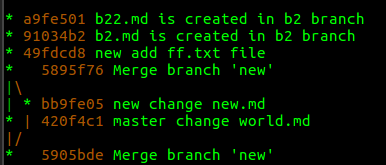
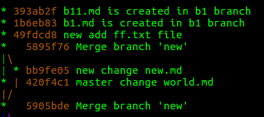
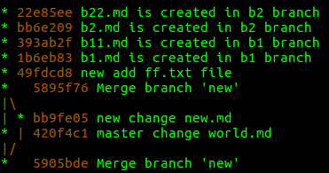
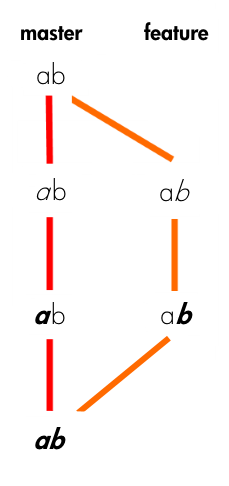

Git in short

基本概念

- 工作目录（working directory）：文件系统能够直接看到的文件，以及文件中的内容；所有分支共享的
- 暂存区（stage）：
git add命令就是将修改放入暂存区；暂存区是所有分支共享的 - 版本库（repository）：
git commit提交暂存区中的修改，对于当前分支
初始化仓库
git init
查看文件修改内容
与工作目录中的文件内容与最新的 commit 对应的文件做对比
git diff README.md
JetBrains 等 IDE 可视化在这方面做得更好
查看仓库修改状态
git status
添加修改
指定文件
git add filename
添加文件夹下的所有修改
git add dir
正则表达式
git add *
提交更改
提交所有修改过，而且经过 git add 的文件
git commit -m "description"
git add 与 git commit 合并为一条命令。添加当前仓库的所有修改，然后 commit
git commit -a -m "description"
查看 commit 日志
git log
git reflog
git log 只能看当前分支的 commit 记录。
git reflog 查看所有的 commit 记录（包括其他分支）。能看到 reset 等命令的记录，git reset --hard HEAD 命令执行后 git log 无法查看之前的版本信息，而 git reflog 可以。
查看
git log --graph
回滚
- HEAD：代表当前版本，也就是最新的提交
- HEAD^：代表上一个版本
- HEAD^^：上上个版本
- 以此类推
硬回滚
git reset --hard HEAD
git reset --hard commit_id
git reset --hard HEAD@{2}
git reset --hard 同时放弃了工作区和暂存区的修改，对当前分支直接进行了回滚。
放弃工作区的修改
git checkout -- filename
- 如果
git add filename还没执行，回滚某个文件到当前分支最新的 commit 中 - 如果 filename 没有被 git commit，也没有被 git add，执行失败
- 否则，将工作区的文件的放弃，文件内容同步到暂存区的一样
如果工作区删除了 filename，上命令也可以进行恢复。
放弃暂存区的修改
因为已经执行过：git add filename，已经把文件添家到暂存区了，目的是将 filename 的修改移除暂存区，commit 有用的修改。
git reset HEAD filename
注意，上命令并不会修改工作区中文件的内容，仅仅是操作了暂存区。
分支
查看分支
git branch
创建新的分支
创建分支 branch_name，并切换到该分支：
git checkout -b branch_name
切换到已经存在的分支：
git checkout branch_name
合并分支
将 branch_name 分支的内容合并到当前分支
git merge branch_name
合并有两种可能：
- current_branch 落后于 branch_name，也就是 current_branch 在 branch_name 的某个历史状态，如下图：

这种情况的 merge 很好解决，默认情况下使用 fast-forward 直接将 current_branch 指向 branch_name，merge 不会产生一个新的 commit。
使用 fast-forward，如果这时候删除了 branch_name 分支，那么在历史信息中就找不回 branch_name 分支信息了，因为被 current_branch 分支的信息覆盖了，无法再恢复 branch_name 分支。
可以通过禁止 fast-forward，而是通过新生产一个 commit 的方法 merge，这样就可以将 branch_name 分支的信息留在历史中：
git merge --no-ff -m "no fast-forward merge" branch_name
效果如下：

- current_branch 与 branch_name 处于不同的分支上，出现了分叉，如下图：

产生冲突有两种情况：
- 修改了同一个文件的同一行
- 修改了同一个文件的不同行 or 修改了不同文件
对于 1 的情况，需要手动解决冲突。在产生冲突的地方，git 会阐述当前分支和 branch_name 分支在冲突部分的差异，格式如下：
3 <<<<<<< HEAD 4 hello world master branch 5 ======= 6 hello world new branch 7 >>>>>>> new
对于 2 的情况，git 能够为我们自动解决该冲突，并且产生一个新的 commit 其 message 格式：Merge branch 'branch_name'。对于多人进行开发的项目，如果每一个 commit 都产生情况 2 的冲突，那么就会产生很多无谓的 merge commit，也不利于定位问题。
删除分支
git branch -d branch_name
如果需要强行删除分支：
git branch -D branch_name
删除远程分支：
git push origin --delete gh-pages
本地分支与远程分支的映射
git branch --set-upstream-to=origin/dev dev
将本次的 dev 分支与远程的 origin/dev 分支进行映射后，下次可以直接执行 git pull、git push 等命令。
本地创建一条新分支与远程保持同步
git checkout -t origin/dev
命令在本地创建一个名为 dev 的分支，然后 upstream 与 origin/dev 进行关联。
查看分支 upstream
git branch -vv
结果如下：
(env) ➜ test git:(gh-pages) ✗ git branch -v * gh-pages ff99c03 Deployed dc48dce with MkDocs version: 0.17.3 master 9744d73 master merge new branch stop ff new 49fdcd8 new add ff.txt file s 49fdcd8 new add ff.txt file
保存现场
假设有一个 bug 需要马上修复，但是我们手头的代码还没写完，commit 的话会产生很多无谓的消息，这时候就需要保存工作现场。
git stash
查看 stash 中都有什么：
git stash list
值得一提，stash 是所有分支所共享的，也就是别的分支可以引用本地的 stash。
恢复现场，但是不删除现场的历史：
git stash apply stash@{0}
删除现场：
git stash drop stash@{0}
上述两条命令可以使用一条命令代替：
git stash pop
拉取远程分支
git fetch
fetch 与 pull 的区别：

rebase
re-base： - re：重复的，比如 redo 再做 - base：基
所以 rebase 可以理解为基基，也就是 GG（哈哈），听说很容易出事情。
git rebase 是会改变 commit 记录的，如果本分支已经 push 到远程了，那么不推荐进行 rebase 操作，rebase 的作用是为了使得提交记录更加美观，利于未来查找问题或 code review。
git rebase branch_name
找到 branch_name 与 current_branch 的公共最晚提交 c，然后将 branch_name 分支 c 后的提交加在 current_branch c 后。
设 current_branch=b2、branch_name=b1
b2 分支 rebase 前的 log：

b1 分支的 log：

在 b2 分支执行 git rebase b1 后，b2 的 log：

在朋友博客看到两张比较好的描述 rebase 的图片：
设 current_branch=feature、branch_name=master
rebase 前：

在 feature 分支执行 git rebase master 后：

rebase 遇到的问题
➜ test git:(b1) git rebase b2 It seems that there is already a rebase-apply directory, and I wonder if you are in the middle of another rebase. If that is the case, please try git rebase (--continue | --abort | --skip) If that is not the case, please rm -fr "/home/g10guang/Public/test/.git/rebase-apply" and run me again. I am stopping in case you still have something valuable there.
解决方法：https://stackoverflow.com/a/8780538/7159205
标签
标签 tag 用于更好地定位某一个 commit 记录。
git tag v0.1 [commit_id]
默认在当前分支最新的 commit 记录打标签。
附带 message 的 tag：
git tag -a v0.1 -m "version 0.1 released" commit_id
查看标签
git tag
删除标签
删除本地标签：
git tag -d v0.1
删除远程标签：
git push origin :refs/tags/<tagname>
推送标签到远程
tag 存储在本地，需要显示将其推送到远程
git push origin [tag_name]
一次性推送所有还没推送到远程的标签：
git push origin --tags
git show
查看标签：
git show v1.0
查看提交记录：
git show commit_id